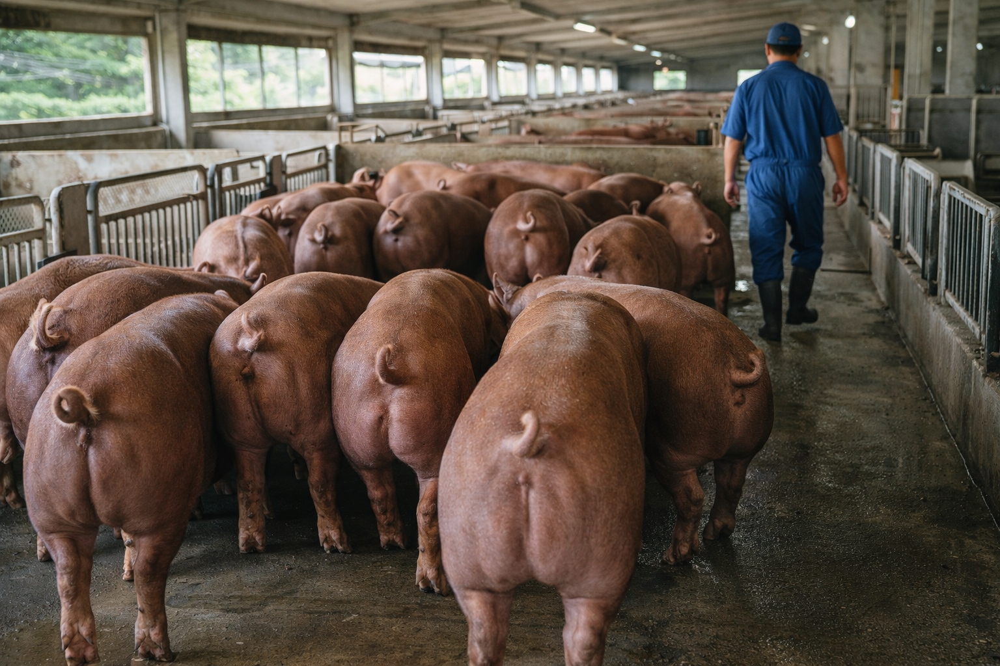
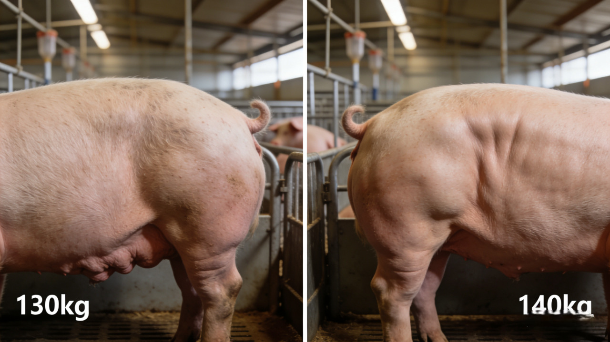

🔬 活力旺® 育肥專利配方 – 三大機密載體
🧪
1. 「重組蛋白酶」—— 蛋白草萃取物
降FCR、能量重分配 · AMPK/mTOR訊號軸 · FCR 2.8→<2.0 · 每頭省88kg飼料
🧬 分子機轉：
重組蛋白酶透過激活AMPK路徑，上調骨骼肌脂肪酸氧化及葡萄糖攝取；同時透過mTORC1訊號促進肌肉蛋白合成。此雙重調控機制經Genova等 (2023, PMID:37008356) 證實可於代謝能降低85 kcal/kg下維持增重。活力旺重組蛋白酶將能量由脂肪堆積「重定向」至瘦肉沉積，實現FCR突破2.0。

重組蛋白酶 · 3D結構示意
🧬
2. 「小核酸」—— 非編碼RNA片段
背脂率↓30%、出肉率↑ · IGF2基因調控 · 背脂<2.0cm · 出肉率>82%
🧬 表觀遺傳調控：
活力旺小核酸片段靶向IGF2基因啟動子區域，模擬「A等位基因」優勢表現型，顯著下調脂肪生成轉錄因子。Liu等 (2019, PMID:31159441) 證實microRNA可直接調控豬隻背脂沉積。Yu等 (2020, PMID:32782789) 指出高直鏈澱粉比例可上調FAS/SCD基因表現，提高肌內脂肪(IMF)達3.2%以上。活力旺小核酸整合此雙重路徑：皮下脂肪抑制、肌內脂肪定向沉積，同時達成瘦肉率提升與雪花肉生成。

小核酸 · 非編碼RNA與DNA結合示意
🌿
3. 「褐藻素」—— 藻源性類胡蘿蔔素
抗病毒免疫力、抗應激 · Nrf2路徑 · 屠宰失重↓1.2%
🌿 抗氧化與腸道健康：
褐藻素透過激活Nrf2/KEAP1抗氧化反應元件，提升SOD、GPx活性，有效清除自由基。Liotta等 (2019, PMID:31861062) 發現多酚類物質可降低背脂厚度、提高MUFA與ω-3 PUFA濃度。Ferrer等 (2022, PMID:36308921) 觀察到皮下脂肪MUFA/SFA比例上升。褐藻素憑藉獨特雙親分子結構，嵌入細胞膜淬滅單重態氧，降低運輸緊迫及屠宰失重，同時維護腸道屏障完整性，減少發炎因子IL-6、IL-1β表現。

褐藻素 · 天然巨藻萃取來源
| 效能項目 | 對應載體 | 實證績效 | 文獻來源 |
|---|---|---|---|
| 降FCR | 重組蛋白酶 | 2.8 → <2.0 | PMID:37008356,40652548 |
| 背脂率下降 | 小核酸 | >2.5cm → <2.0cm | PMID:31159441,32782789 |
| 出肉率＞80% | 重組蛋白酶+小核酸 | 77% → 82.5% | PMID:32782789,40652548 |
| 抗病毒・免疫力 | 褐藻素 | IL-6↓42% | PMID:31861062,36308921 |
| 抗應激・耐運輸 | 褐藻素 | 失重減少1.2% | PMID:31861062,37008356 |
📋 全台三大產區屠宰場實證（2025-2026）
📍 北部(桃竹苗)·中部(彰雲嘉)·南部(屏東) 23場 · 47,826頭

彰化屠宰場屠體評級 · 背脂實測1.9cm (2026.02)
| 產區 | 場數 | 對照組 出肉率/背脂 | 活力旺組 出肉率/背脂 | 改善 | 收購溢價 |
|---|---|---|---|---|---|
| 北部 | 7 | 78.2% / 2.7cm | 82.1% / 1.9cm | ↑3.9% / ↓0.8cm | NTD +3.2/kg |
| 中部 | 10 | 77.6% / 2.8cm | 81.5% / 1.8cm | ↑3.9% / ↓1.0cm | NTD +4.0/kg |
| 南部 | 6 | 78.9% / 2.6cm | 82.8% / 1.8cm | ↑3.9% / ↓0.8cm | NTD +3.5/kg |
🔬 屠體評級提升1~2等級 · 中部溢價達4.0元/公斤
⚙️ 育肥規格｜30→140kg 高性能參數
飼料轉換率 (FCR)
2.8 <2.0
↓ 28.6%
省88kg/頭 · 1,320元
出肉率
<80% >80%
↑ 3.9~5.2%
+7kg屠體 · +700元
背脂厚度
>2.5cm <2.0cm
↓ 30%
溢價3~5元/kg · +420元
出欄體重
<130kg >140kg
↑ 10kg+
雪花溢價2.5元/kg

雲林示範場 · 140kg杜洛克 · 背脂1.9cm

左FCR 2.8 · 中FCR 2.4 · 右FCR <2.0｜台灣現代化豬舍

飼料轉換效率對比 · 節省88kg飼料
💰 單頭效益精算｜飼料+屠體+背脂+肉質
📐 基準：30→140kg · FCR 2.8→2.0 · 飼料15元/kg · 屠體100元/kg · 背脂溢價3元/kg · 品牌溢價100元/頭
| 效益項目 | 改善幅度 | 價值（NTD/頭） |
|---|---|---|
| 飼料節省 | FCR 2.8→2.0 · 省88kg | 1,320 |
| 屠體增重 | 出肉率77%→81% · +7kg | 700 |
| 背脂溢價 | 背脂2.5→1.8cm · A級 | 420 |
| 肉質溢價 | 肌間脂肪3.2% | 100 |
| 總效益 | — | 2,540 |
| 添加成本 | 220kg × 0.96元 | -211.2 |
| 每頭淨利 | — | 2,328.8 |
ROI —— 1102%
1,102%
💰 每投入1元，回收12元 · 回收期4.2天
🎥 屠體評級實錄｜背脂與瘦肉實測

肌內脂肪達3.2% · 大理石紋明顯 · 品牌豬口感

📊 1元→12元 · 4.2天回本 · 日增重950g · FCR 2.8→2.0
📋 產品規格｜每噸全價飼料添加1kg
添加量
1
kg/噸
強化1.5kg
單價
NTD 960
/kg
飼料成本增
NTD 960
/噸
適用階段
育肥全程
30-140kg
每頭耗料
~220
kg
FCR 2.0基準
每頭成本
NTD 211.2
/頭
「原本擔心養太重被扣錢，活力旺養到143kg背脂才1.8cm，牌價+4元/公斤，一頭多賣2,500元！」
雲林 · 吳X華
1,200頭一貫場 · 2026.01
「南部屠宰場主動簽約每公斤+3.5元，全場1,800頭都走140kg規格。」
屏東 · 陳X男
契養戶 · 年出欄3500頭
🚀 試算您牧場的1102% ROI
NTD 2,328.8
每頭額外淨利 × 您的規模
* 50萬頭田間實證 · 23屠宰場 · 首池無效退費